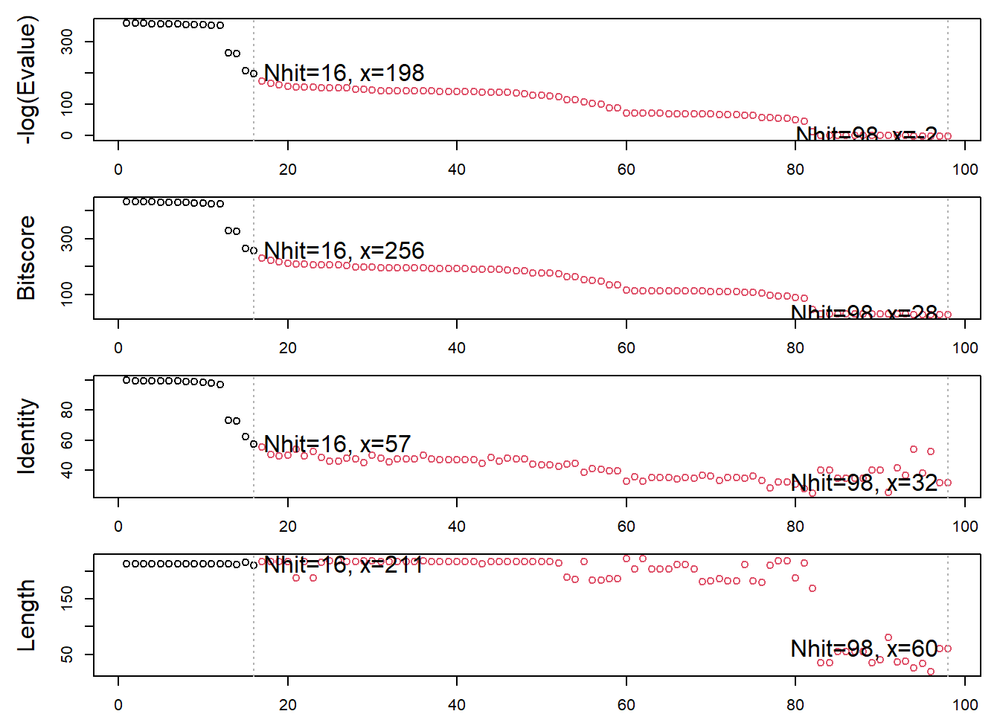

169794/196779*100[1] 86.28665This database has mostly x-ray crystalography. Class skipped Q1-3 because the site was too slow.
Q1: What percentage of structures in the PDB are solved by X-Ray and Electron Microscopy.
169794/196779*100[1] 86.28665Q2: What proportion of structures in the PDB are protein?
(171221+10444+10876)/196779[1] 0.9784631Q3: Type HIV in the PDB website search box on the home page and determine how many HIV-1 protease structures are in the current PDB?
4703 structures
Q4: Water molecules normally have 3 atoms. Why do we see just one atom per water molecule in this structure?
We only see one atom because it only displays the oxygen atom because the hydrogen atoms are too small to be imaged.
Q5: There is a critical “conserved” water molecule in the binding site. Can you identify this water molecule? What residue number does this water molecule have?
The water molecule has a residue number of 308
Q6: Generate and save a figure clearly showing the two distinct chains of HIV-protease along with the ligand. You might also consider showing the catalytic residues ASP 25 in each chain (we recommend “Ball & Stick” for these side-chains). Add this figure to your Quarto document. Discussion Topic: Can you think of a way in which indinavir, or even larger ligands and substrates, could enter the binding site?
 A conformational change can allow for a larger ligand and substrates to enter the binding site.
A conformational change can allow for a larger ligand and substrates to enter the binding site.
Bio3D is an R package for structural bioinformatics. Bring in bio3d package.
library(bio3d)Read PDB file from online repository.
pdb <- read.pdb("1hsg") Note: Accessing on-line PDB filepdb
Call: read.pdb(file = "1hsg")
Total Models#: 1
Total Atoms#: 1686, XYZs#: 5058 Chains#: 2 (values: A B)
Protein Atoms#: 1514 (residues/Calpha atoms#: 198)
Nucleic acid Atoms#: 0 (residues/phosphate atoms#: 0)
Non-protein/nucleic Atoms#: 172 (residues: 128)
Non-protein/nucleic resid values: [ HOH (127), MK1 (1) ]
Protein sequence:
PQITLWQRPLVTIKIGGQLKEALLDTGADDTVLEEMSLPGRWKPKMIGGIGGFIKVRQYD
QILIEICGHKAIGTVLVGPTPVNIIGRNLLTQIGCTLNFPQITLWQRPLVTIKIGGQLKE
ALLDTGADDTVLEEMSLPGRWKPKMIGGIGGFIKVRQYDQILIEICGHKAIGTVLVGPTP
VNIIGRNLLTQIGCTLNF
+ attr: atom, xyz, seqres, helix, sheet,
calpha, remark, callQ7: How many amino acid residues are there in this pdb object?
198 amino acid residues
Q8: Name one of the two non-protein residues?
HOH, also MK1
Q9: How many protein chains are in this structure?
2 chains
Look at attributes and head of atom
attributes(pdb)$names
[1] "atom" "xyz" "seqres" "helix" "sheet" "calpha" "remark" "call"
$class
[1] "pdb" "sse"head(pdb$atom) type eleno elety alt resid chain resno insert x y z o b
1 ATOM 1 N <NA> PRO A 1 <NA> 29.361 39.686 5.862 1 38.10
2 ATOM 2 CA <NA> PRO A 1 <NA> 30.307 38.663 5.319 1 40.62
3 ATOM 3 C <NA> PRO A 1 <NA> 29.760 38.071 4.022 1 42.64
4 ATOM 4 O <NA> PRO A 1 <NA> 28.600 38.302 3.676 1 43.40
5 ATOM 5 CB <NA> PRO A 1 <NA> 30.508 37.541 6.342 1 37.87
6 ATOM 6 CG <NA> PRO A 1 <NA> 29.296 37.591 7.162 1 38.40
segid elesy charge
1 <NA> N <NA>
2 <NA> C <NA>
3 <NA> C <NA>
4 <NA> O <NA>
5 <NA> C <NA>
6 <NA> C <NA>Install necessary packages
#install.packages("ggrepel")
#install.packages("devtools")
#install.packages("BiocManager")
#BiocManager::install("msa")
#devtools::install_bitbucket("Grantlab/bio3d-view")Q10. Which of the packages above is found only on BioConductor and not CRAN?
msa
Q11. Which of the above packages is not found on BioConductor or CRAN?:
bio3d-view
Q12. True or False? Functions from the devtools package can be used to install packages from GitHub and BitBucket?
TRUE
Retrieve ADK data. We will start with PDB id 1AKE.
aa <- get.seq("1ake_A")Warning in get.seq("1ake_A"): Removing existing file: seqs.fastaFetching... Please wait. Done.aa 1 . . . . . 60
pdb|1AKE|A MRIILLGAPGAGKGTQAQFIMEKYGIPQISTGDMLRAAVKSGSELGKQAKDIMDAGKLVT
1 . . . . . 60
61 . . . . . 120
pdb|1AKE|A DELVIALVKERIAQEDCRNGFLLDGFPRTIPQADAMKEAGINVDYVLEFDVPDELIVDRI
61 . . . . . 120
121 . . . . . 180
pdb|1AKE|A VGRRVHAPSGRVYHVKFNPPKVEGKDDVTGEELTTRKDDQEETVRKRLVEYHQMTAPLIG
121 . . . . . 180
181 . . . 214
pdb|1AKE|A YYSKEAEAGNTKYAKVDGTKPVAEVRADLEKILG
181 . . . 214
Call:
read.fasta(file = outfile)
Class:
fasta
Alignment dimensions:
1 sequence rows; 214 position columns (214 non-gap, 0 gap)
+ attr: id, ali, callQ13. How many amino acids are in this sequence, i.e. how long is this sequence?
214
We can use this sequence to BLAST the PDB and find similar sequences and structures.
b <- blast.pdb(aa) Searching ... please wait (updates every 5 seconds) RID = NG9GNH8J016
.
Reporting 98 hitsWe can plot a summary of search results or list out top hits.
hits <- plot(b) * Possible cutoff values: 197 -3
Yielding Nhits: 16 98
* Chosen cutoff value of: 197
Yielding Nhits: 16 
head(hits$pdb.id)[1] "1AKE_A" "4X8M_A" "6S36_A" "6RZE_A" "4X8H_A" "3HPR_A"Download related PDB files.
files <- get.pdb(hits$pdb.id, path="pdbs", split=TRUE, gzip=TRUE)
|
| | 0%
|
|==== | 6%
|
|========= | 12%
|
|============= | 19%
|
|================== | 25%
|
|====================== | 31%
|
|========================== | 38%
|
|=============================== | 44%
|
|=================================== | 50%
|
|======================================= | 56%
|
|============================================ | 62%
|
|================================================ | 69%
|
|==================================================== | 75%
|
|========================================================= | 81%
|
|============================================================= | 88%
|
|================================================================== | 94%
|
|======================================================================| 100%